Workshop Development - Dev Spaces With the Vote Application deployed to our vote-app-dev-%USERID% project, we can now use OpenShift Dev Spaces to develop and test our application. OpenShift Dev Spaces is a browser-based IDE that allows you to develop in the cloud. It provides a ready-to-use development stack with a web-based IDE, terminal, and version control support. It also provides pre-built developer workspaces that allow you to start coding immediately, which we’ll use in this lab. We’ll quickly change the source code of our vote-ui application, see the results in real-time, and push these changes to our repository. Getting setup with Dev Spaces Let’s start by getting more familiar with the Dev Spaces interface. We can begin by navigating to Dev Spaces from the OpenShift Console to do this. To do this, click on the application launcher at the top right corner of the OpenShift Web Console and select Red Hat OpenShift Dev Spaces. This will open up the Dev Spaces interface. You’ll need to first authorize Dev Spaces to access your OpenShift cluster by selecting Allow selected permissions. After authorizing, you’ll see the Dev Spaces dashboard. From here, you can see the workspaces that are available to you. For this lab, we’ll use the vote-ui workspace, a pre-built workspace containing the Vote Application source code. Within a minute, the vote-ui workspace will be ready to use, and you can click Open on the right-hand side to enter the Dev Spaces IDE. 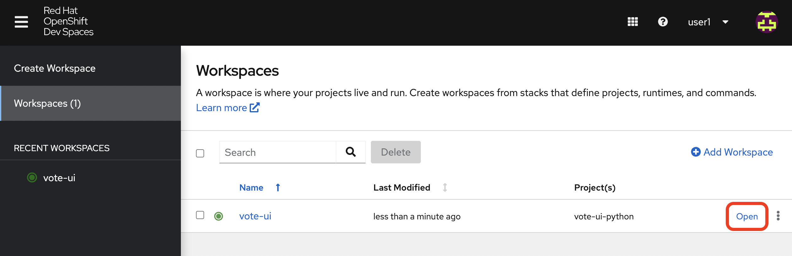 Once the Dev Spaces interface opens, we’ll have to hit Trust Workspace & Install and Yes, I trust the authors to install the required components and enable permissions needed for this lab. 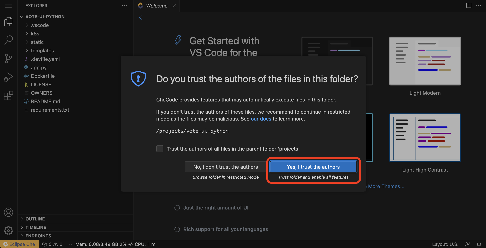 There may be some Get Started tabs in the dashboard that you can close, but from here, we can begin to make changes to the Vote Application. But first, let’s get familiar with the powerful features of Dev Spaces. 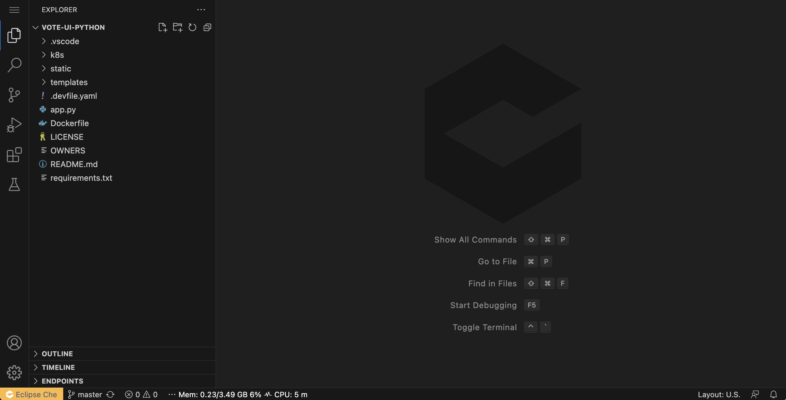 Extension support Built from the open source Eclipse Che project, Dev Spaces supports Microsoft Visual Studio Code extensions and Language Server Protocol. This means you can use your favorite Visual Studio Code extensions in Dev Spaces. You can also use the Language Server Protocol to provide language features like auto-complete, go-to-definition, and hover support. Terminal support Dev Spaces also provides a terminal that allows you to run commands in your workspace. This is useful for running commands like mvn clean package or npm install to build your application. You can also use the terminal to run commands within your OpenShift cluster without needing to authenticate, just like the OpenShift Web Terminal. 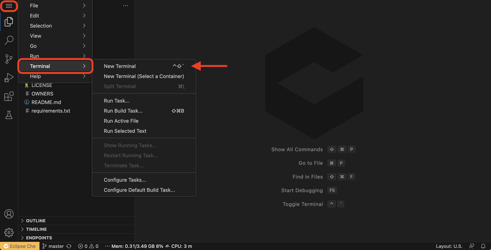 With the Dev Spaces built-in terminal, let’s run the following commands to test a bit of Python code to print some text in our terminal. python print("Hello from Summit 2023!") quit() 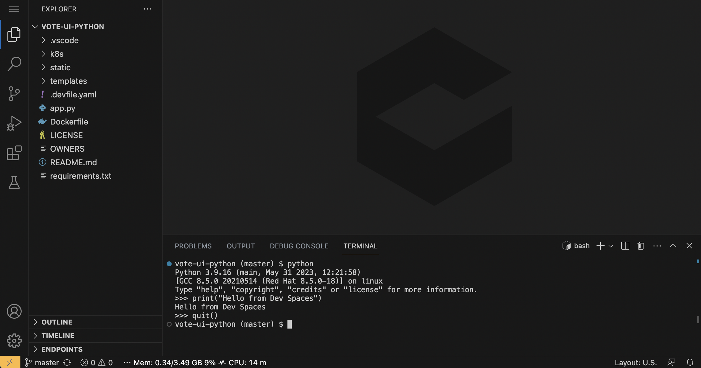 Git support Dev Spaces also provides a built-in version control system. This allows you to commit and push your changes to a Git repository. You can also use the version control system to pull changes from a Git repository. Editing the Vote Application in Dev Spaces Installing the application dependencies Let’s first set up the dependencies for our application and run the Vote Application locally. From the top left corner, we can select Terminal and then Run Task. We can select Show all tasks and devfile: Install dependencies from here. This will install the necessary Python dependencies for the Vote Application. 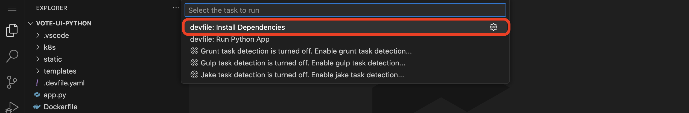 Next, we can select Terminal and then Run Task again. We can select Show all tasks and devfile: Run Python App from here. This will run the Vote Application in development. Click on the Open in New Tab button to open the Vote Application in a new browser tab. You’ll now see a pop-up in the lower right corner about a new process running on port 8080. We can see live code changes to the Vote Application running in the browser using this. From here, we can click the Yes button to open the Vote Application in a new browser tab. It may take a few seconds, but you should see the Vote Application running. 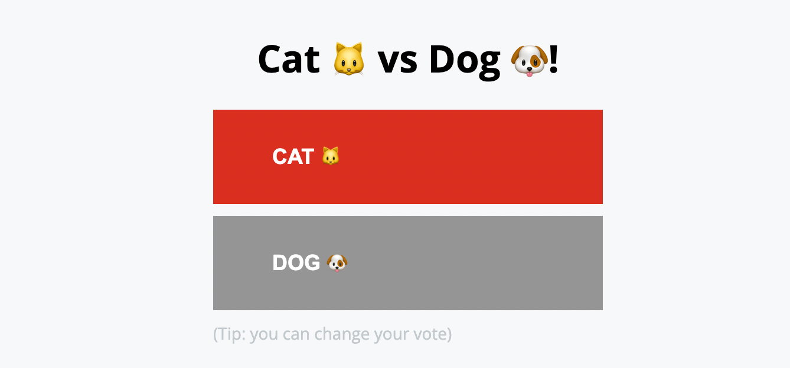 We can now begin to make changes to the Vote Application from the Dev Spaces interface. We can edit the index.html file in the templates directory to do this. Live coding within Dev Spaces Here, on line 16, we can change the text from {{option_a}} vs {{option_b}}! to {{option_a}} vs {{option_b}}! - Red Hat Summit 2023. This will change the title of the Vote Application to Vote App - Red Hat Summit 2023. Feel free to copy the below code and insert it on line 16. <h1>{{option_a}} vs {{option_b}}! - Red Hat Summit 2023</h1> 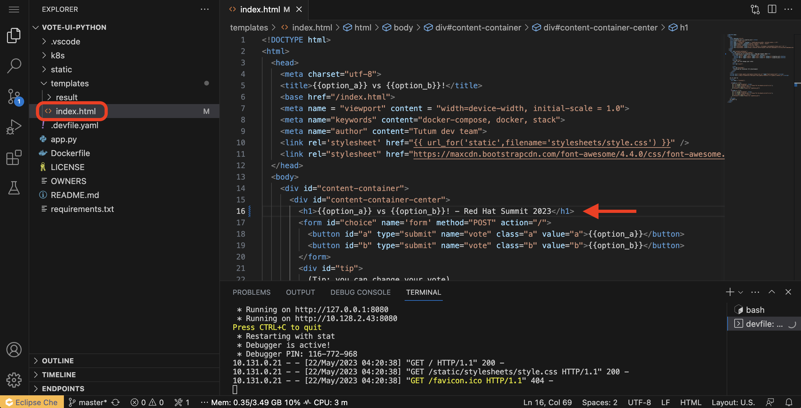 Now, if we return to our new tab with the local Vote Application running, we can see the new changes we’ve made updated automatically. 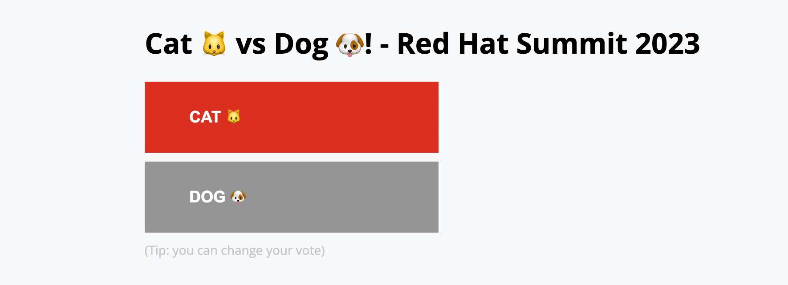 Performing a security scan Now that we’ve made changes to the Vote Application, we can secure our application and analyze our dependencies by performing a security scan. Dependency Analytics is powered by the Snyk Intel Vulnerability DB, the industry’s most advanced and accurate open-source vulnerability database. We can right-click the requirements.txt file from the left menu to do this. From here, we can select Dependency Analytics Report to perform a security scan on the Vote Application. This will open up a new tab in Dev Spaces with the security scan results. Here, we can see information about security issues, dependencies, licenses, and add-ons. 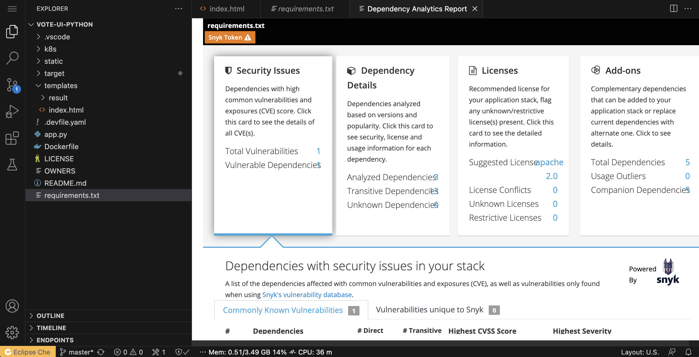 Pushing changes to the Git repository Now that we’ve tested our changes, we can push our changes to the Git repository. We can select the Source Control tab from the left menu to do this. We can first enter a commit message (ex. Modified index.html header), and from here, we can select the dropdown to the right of the ✓ Commit button to Commit & Push our changes to the Git repository, 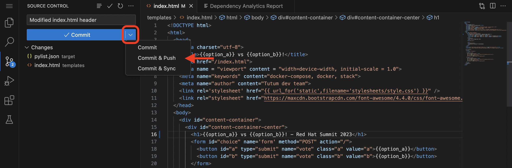 You’ll then see a prompt about staging and committing your changes. We can select Yes from here to stage and commit our changes. Syncing changes to the Vote Application Now that we’ve pushed our changes to the Git repository and with the webhook configured, our changes trigger a rebuild of the vote-ui application image. To see this in real-time, we can navigate to the OpenShift Web Console and select the vote-app-ci-%USERID% project. From here, we can select Pipelines from the left menu. We should see the pipeline vote-app-ui-pipeline running and rebuilding the Vote Application. Once the pipeline has completed, in the vote-app-gitops repository, there will be a new commit from Tekton that will contain the new hash for the Vote Application image. Now, Argo CD will automatically pick up on these changes from the repository. To deploy the new image to the vote-app-dev-%USERID% project, head back to Argo CD and select the vote-app-dev-%USERID% application. You’ll see that the application is now out of sync, and hasn’t been updated, as we declared in our Application resource that we didn’t want self-healing enabled. However, to view the new changes from the top menu, click on Sync. Now, select Synchronize. This will deploy the new image to the vote-app-dev-%USERID% project. 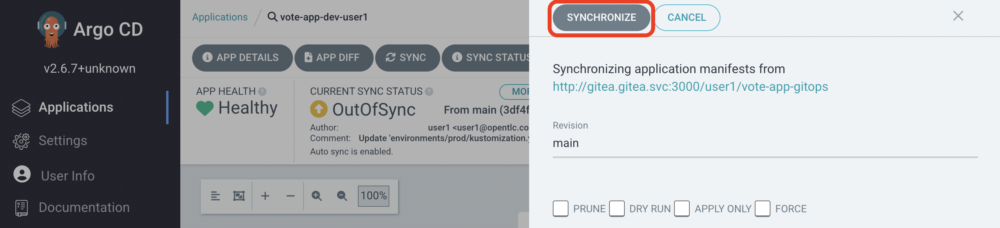 Next steps Making these changes manually is a good solution for our development environment, but let’s move this application to production and automate all of this. For this, we can use a separate pipeline to deploy the application to the vote-app-prod-%USERID% project. Argo CD Finish